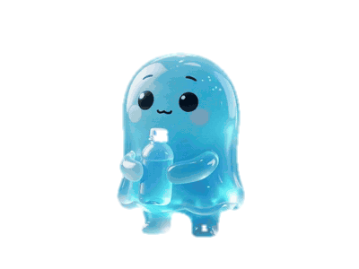
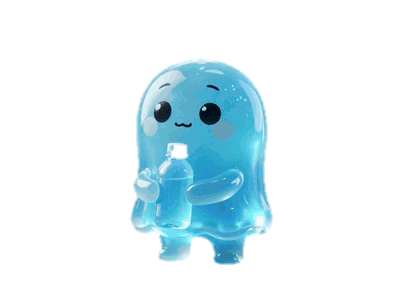
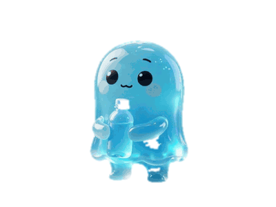

A mobile digital-pet health companion. Every step and every glass of water drives a mood that plays out as real animation — because a pet you can see feel better is one you actually take care of.
Most habit apps reward you with numbers on a screen. HeoPet gives you something to look at: a living creature whose wellbeing is literally derived from yours.
Because the phone already knows your steps, exercise needs no friction — it's measured automatically. Water, which a phone can't sense, is tracked by simple taps. Both feed one model of mood, which decides how the pet looks and moves in real time.
Steps kindle it. Water sustains it. The mood is the interface.
2The metrics
Two signals, one wellbeing state
Steps (auto)
9,000 / day
Read from the phone's pedometer — no input required.
Water (manual)
4 × 500 ml
Each tap records half a litre toward the 2 L daily target.
Each mood is an animated clip that swaps when the state changes.
How the state is chosen
Pacing checkpoints — goal progress is scored in stages, so the pet reacts to momentum (getting there) rather than an all-or-nothing finish.
Priority logic — water and activity have distinct urgency tiers; the engine resolves which mood wins when signals conflict.
EXP & levels — consistent care compounds into progression, giving the loop a long arc beyond any single day.

3The mood engine
From raw data to something alive
The core challenge was making a health state feel like a personality. Raw numbers don't charm anyone — so HeoPet translates metrics into a single, legible mood, then plays it back as motion.
Decision flow
daily progress + priority conflicts → mood index → video state → character animation
Design decisions
Video, not skeletal rigging — pre-rendered clips are far cheaper on battery than live animation, and keep the art direction pixel-perfect.
Checkpoint momentum — small wins keep the pet visibly better off early, so delayed-gratification never breaks the loop.
Conflict resolution — when low water and high activity disagree, the engine prioritizes the more urgent signal instead of averaging them into a bland middle.
4The animations
The mood, in motion
Every mood is its own animation. These clips loop in the app; below they're shown as lightweight GIFs cut directly from the rendered ocean-blue comps so you can see the expressions actually play.
Idle
The calm resting state — the pet at ease with the day going well.
Now playing · Idle
Happy
Good pacing on the metrics — a light, content bounce.
Now playing · Happy
Energetic
High activity met — the pet visibly full of beans.
Now playing · Energetic
Walking
Active movement — shown as the day's steps build up.
Now playing · Walking
Drinking
The water tap in action — rewarded instantly on every sip.
Now playing · Drinking
Thirsty
Hydration lagging — a gentle nudge to grab that next glass.
Now playing · Thirsty
Full clip set — including thirsty-mild, thirsty-severe and sluggish — ships in the app; these six capture the core of the loop.
5The long arc
Care that compounds

A one-day loop fades fast. HeoPet layers a progression system on top so consistent care matters day over day.
The daily loop draws you in. Progression keeps you coming back.
EXP from care — steps, water, and healthy mood states all award EXP.
Levels unlock presence — the pet's states feel richer as you level, celebrating the accumulated habit, not a lucky day.
6What's still hard
Tradeoffs, honestly
1
Manual water is a trust problem. A phone can count steps but not sips. The tap system is honest and simple, but it relies on the user to log — the one piece of friction in an otherwise automatic loop.
2
Video states are static storytelling. Pre-rendered clips look great but don't interpolate between needs. A blend between states could feel even more alive.
3
Mood can collapse to a few archetypes. Eight states cover the core well, but real wellbeing has more nuance — richer states would deepen believability.

7Why this matters
Health you can watch
A habit isn't a checklist. It's something you care about.
HeoPet turns abstract goals into a character you can see respond. The pet's mood — played back as animation — makes a 10,000-step day or a logged glass of water feel meaningful in the moment. It's a simple idea with a strong execution: metrics on the inside, personality on the outside.
View the repo
App source, mood engine, and the full work log are open on GitHub.